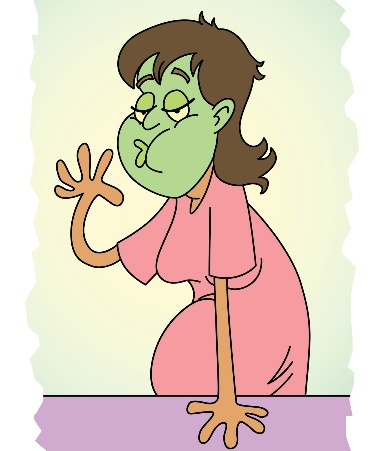
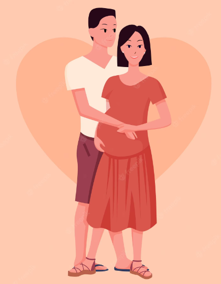
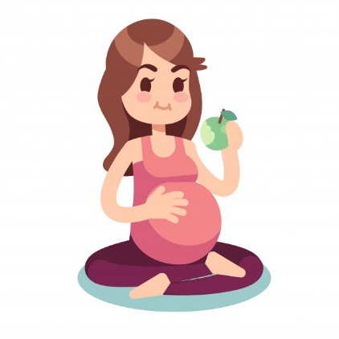

INFORMAÇÕES BÁSICAS PARA O ACOMPANHAMENTO DURANTE O TRABALHO DE PARTO.

O trabalho de parto é um processo fisiológico individual e
natural que ocorre em cada mulher. Durante ele, o corpo da
mulher é envolvido numa série de alterações físicas, emocionais
e hormonais, promovendo um preparo no corpo dela, para o
nascimento do bebê. Segue abaixo algumas informações que
servirão para esclarecer suas dúvidas e orientar você em como
acompanhar cada passo desse processo, cooperando para uma
assistência de qualidade à mãe e ao bebê.
IDADE GESTACIONAL

Caderneta da Gestante – Ministério da Saúde/2022
A idade gestacional esperada para o momento do parto varia entre
a 37ª e 42ª semanas, entretanto, a maioria dos bebês nasce entre
a 39ª e 40ª semanas. É importante lembrar que cada gravidez é
única e pode variar ligeiramente em duração.
DILATAÇÃO DO COLO DO ÚTERO
1 cm
2 cm
3 cm
4 cm
5 cm
6 cm
7 cm
8 cm
9 cm
10 cm
A dilatação do colo do útero varia de 1 a 10 centímetros.
Divindo-se em alguns estágios do trabalho de parto, geralmente,
movendo o bebê para o canal vaginal até o nascimento. A
dilatação recomendada para a internação na maternidade ocorre a
partir de 4 a 5 centímetros. É importante lembrar que cada
mulher e cada gravidez são únicas, e o processo de dilatação
ocorre por vários fatores.
SINAIS E SINTOMAS NATURAIS ESPERADOS

Os sinais de trabalho de parto incluem dor regular, crescente e
ondulada na região das costas, perda de tampão mucoso ou gosma
sanguinolenta, rompimento da bolsa amniótica, aumento da pressão
na região pélvica e possíveis náuseas, vômitos e até diarreia. É
importante lembrar que os sinais e sintomas durante o trabalho
de parto podem variar de mulher para mulher, e a evolução pode
variar, então, tranquilize sua parturiente quanto a isso.
ALTERAÇÕES EMOCIONAIS NA MÃE

Várias mudanças hormonais ocorrem no corpo da mãe durante o
trabalho de parto que podem afetar suas emoções positiva e
negativamente. Por um lado, temos hormônios responsáveis por
estimular as contrações uterinas e promover a dilatação, ao
mesmo tempo, ocasionando a dor, ansiedade, medo, inquietação e
impaciência. Diante disso, é importante estimular pensamentos
positivos, palavras de ânimo para que ela seja encorajada a
passar pelo processo natural do parto, promovendo a ela e ao seu
bebê o bem-estar.
AJUDA DO ACOMPANHANTE

O acompanhante é uma peça fundamental e importante para ajudar a
mulher a lidar com a dor e o desconforto do trabalho de parto.
Existem várias técnicas não medicamentosas que podem ser
utilizadas e orientadas por ele para diminuir a dor e promover
conforto no trabalho de parto. Dentre eles, a massagem,
caminhada, exercícios respiratórios, banhos e apoio emocional. A
massagem pode ajudar a soltar a tensão muscular e aliviar a dor;
caminhar pode ajudar o bebê a manter uma boa postura; exercícios
respiratórios podem ajudá-la a controlar a dor e manter a calma
durante o trabalho de parto; um banho pode ajudá-la a relaxar e
aliviar a dor. E além disso, um acompanhante pode fornecer apoio
emocional, encorajar a mulher e ajudar a manter uma atitude
positiva, o que pode ser uma experiência gratificante.
A MÃE DEVE SE ALIMENTAR BEM

É importante comer bem e de acordo com a dieta prescrita pelo
médico, durante o trabalho de parto para fornecer a energia e os
nutrientes que ela e o seu bebê precisam. Ajudando a prevenir
problemas nos batimentos cardíacos do bebê. Estimula a
alimentação é promover o bem-estar emocional da mãe e
proporcionar conforto durante momentos intensos e difíceis como
o trabalho de parto.
ALGUMAS POSIÇÕES DURANTE O TRABALHO DE PARTO

Segue algumas posições que favorecem para o parto, como em pé,
agachada ou encostada em uma superfície vertical para permitir
que a gravidade ajude no processo de parto, ela ajuda descida do
bebê, inclusive, em pé, reduz a pressão sobre o períneo, reduz o
risco de lacerações e traumas. Além disso, a posição ereta
permite que a parturiente se movimente e encontre a posição mais
confortável durante o trabalho de parto, reduzindo assim a dor e
a necessidade de intervenção médica.
AMAMENTAÇÃO
A amamentação é fundamental para a saúde do bebê e da mãe. O
leite humano é rico em nutrientes, anticorpos e outros
componentes que protegem os bebês de infecções e outras doenças
e promovem o desenvolvimento físico e cognitivo adequado. Para
as mães, a amamentação ajuda a reduzir o risco de câncer de
mama, osteoporose e outros problemas de saúde. É importante
lembrar que para realizar uma boa pega do bebê, ele deve
abocanhar todo o mamilo e a maior parte da aréola da mãe.

AMAMENTAÇÃO

O contato pele a pele se dá pelo contato do bebê sobre a pele da
mãe, é um momento importante para a saúde e o desenvolvimento do
seu bebê, promovendo a liberação de hormônios que ajudam a
regular a temperatura, o açúcar no sangue e a respiração do
bebê. Além disso, estabiliza os batimentos cardíacos do bebê,
promove o vínculo afetivo entre mãe e bebê, reduz o estresse,
favorece a amamentação e estimula o reflexo de sucção no bebê.